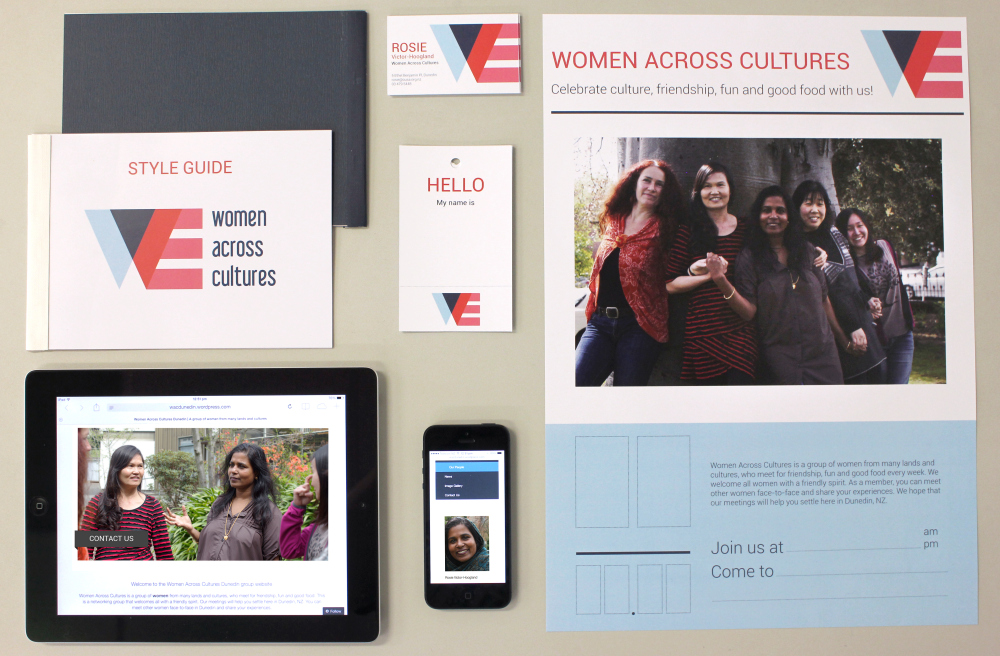
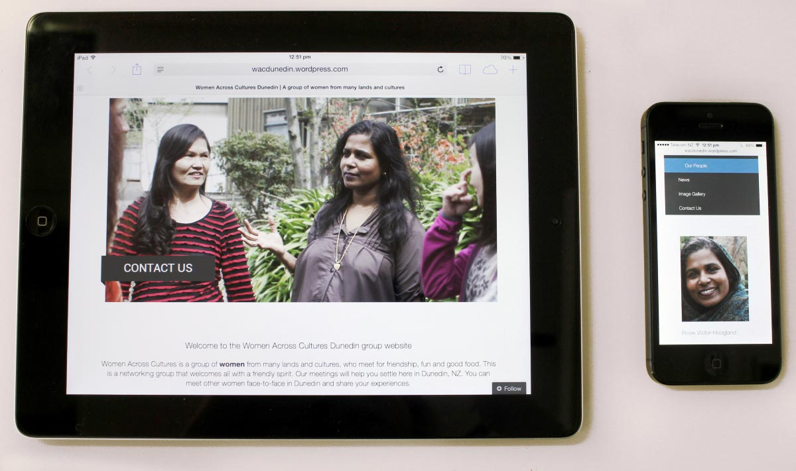
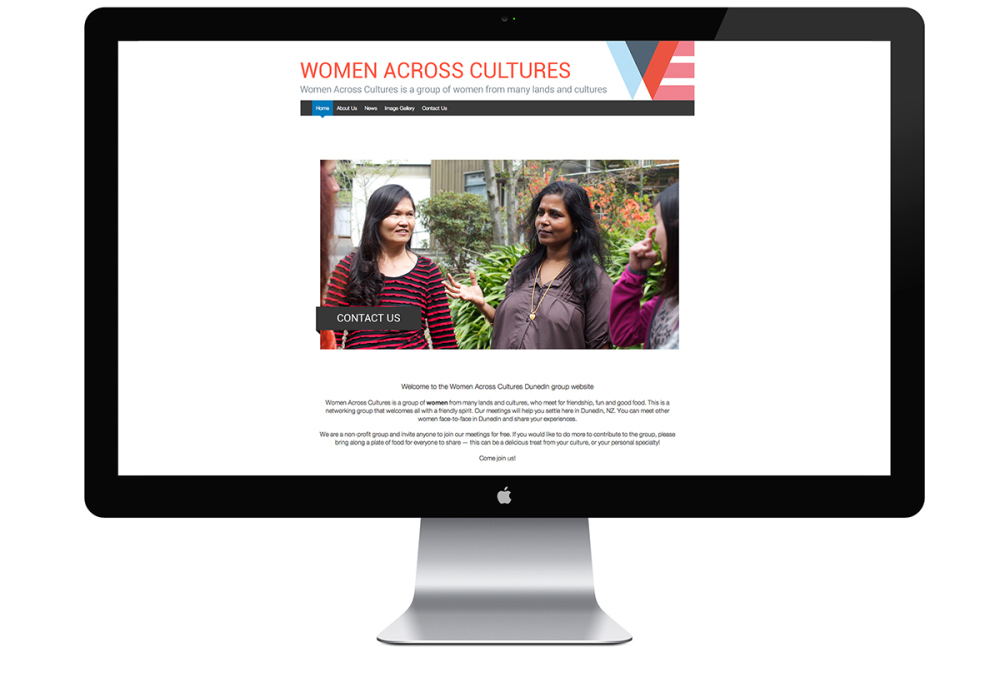
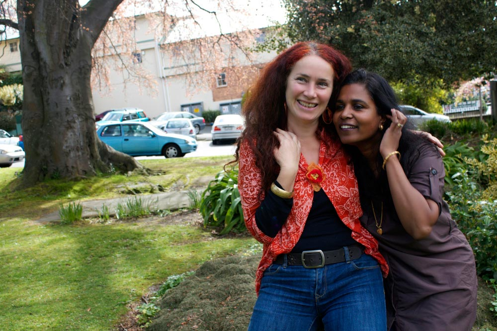
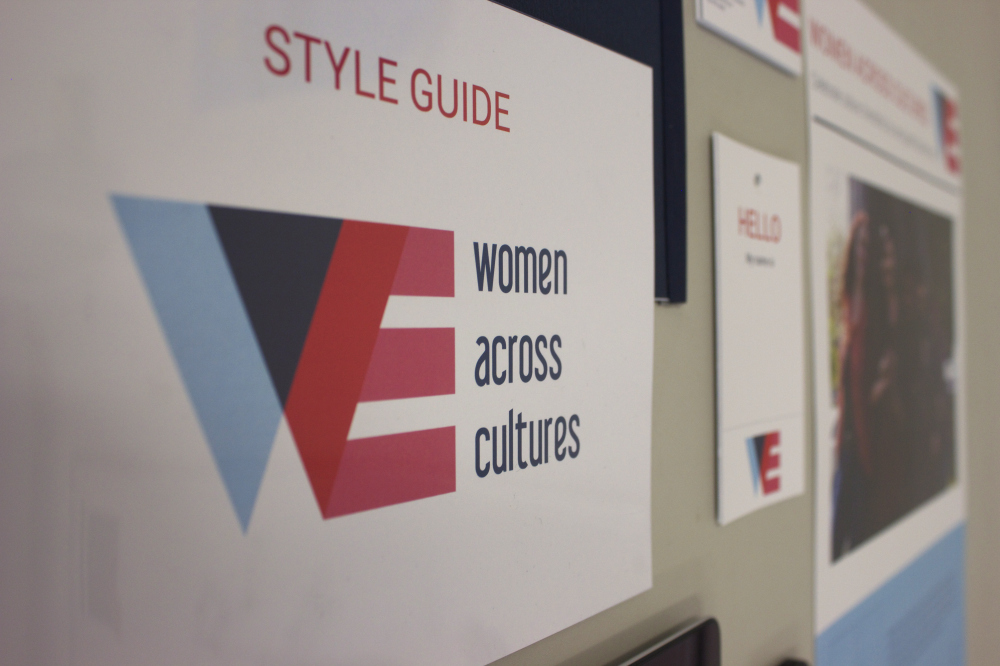
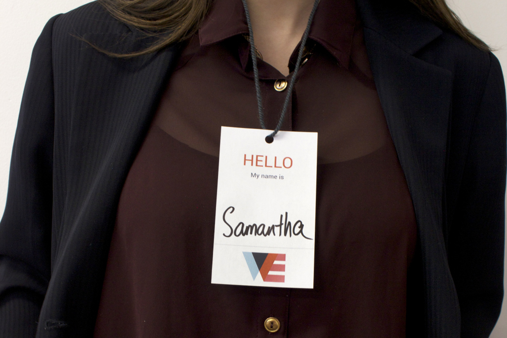
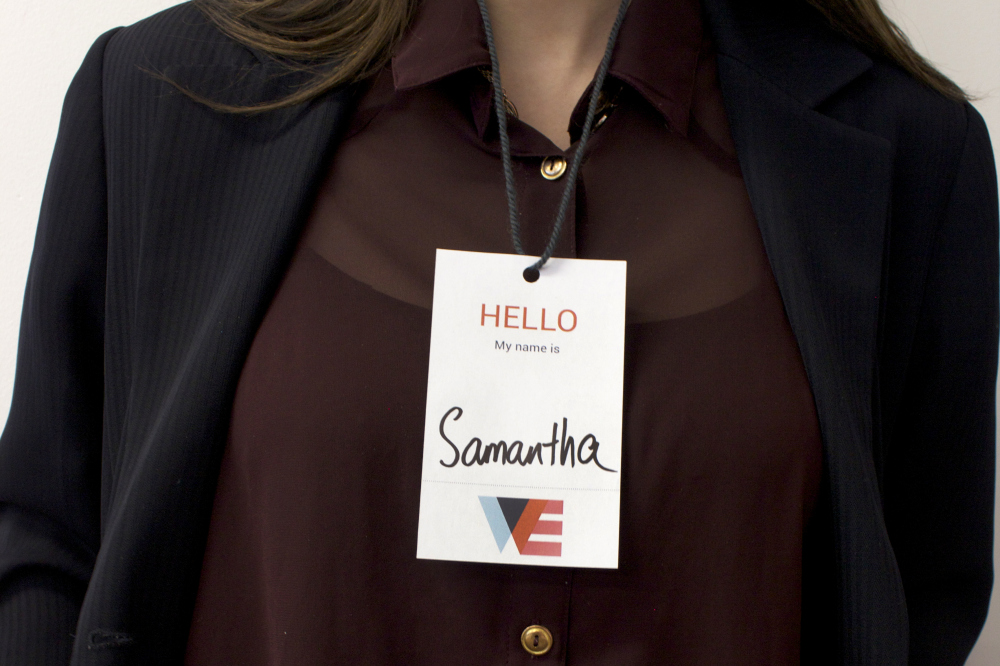

Women Across Cultures
This is a re-branding project for a Dunedin social group Women Across Cultures. I created a new graphic identity from scratch, including a new logo, website and print collateral. I also did a few photoshoots with the ladies to generate graphic content. The WAC logo was created to represent peace and womanhood though colour and shape, as well as form the word "WE" to symbolise inclusivity.
     
